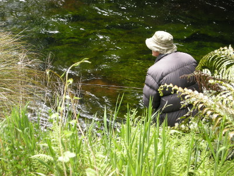
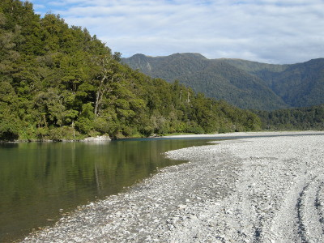
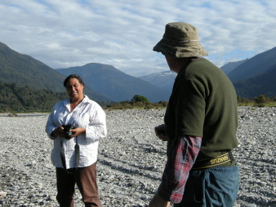
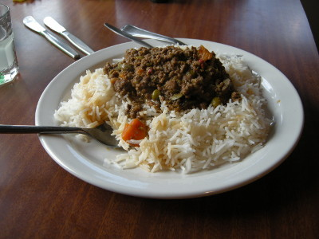
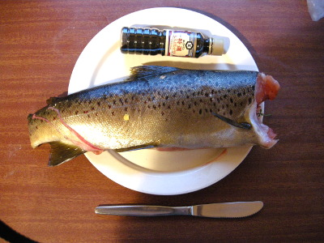

釣行日誌 ＮＺ編 「翡翠、黄金、そして銀塊」
カメラウーマンとの歓談
2010/11/29(MON)-4
同じポイントに僕と同様静かに降りて行ったブリントさんは、白いストリーマーを直下流に向けてキャストし、左岸の岸沿いをリトリーブする。大物が潜んで居るあたりをフライが通過するが、反応が無い。もう一度キャスト。岸沿いの流れからは何も起こらない。さっきの僕のファイトで場を荒らしてしまったようだ。しばらく彼は粘ってキャストし続けたが、結局このポイントでの２尾目は釣れなかった。

残念だがこのスプリングクリークでの釣りはここまで、ということで、歩いて車まで戻ることにした。草ボウボウの道を少し歩くとＳＨ６号線に出た。方向は全く分からなかったので、ひたすらブリントさんに付いて行く。途中、道路橋を渡らなくてはいけなくなり、歩道のスペースが無くてとても危険なので、猛スピードで通過する車に怯えながら、２人で急いで橋を渡った。30分ほど歩くと車を停めた空き地まで戻ることができた。いったんロッジに戻って少し休んでから夕方の釣りを楽しもう、という彼の言葉を聞きつつ車に乗り込んだ。
時刻は午後３時過ぎ。ロッジに戻り、バンダナに包んでいた鱒を冷蔵庫に入れた。ベッドに横たわると、その１尾の疲れがどっと出てきてしばらく昼寝をした。
夕方５時頃に起きて、それじゃぁ夕まづめに行こうか。と再び６号線を走る。車を停め、小径をしばらく歩くと大きな川の広い河原に出た。時刻は６時を回っていたが、まだまだ明るい。

ブリントさんがバックパックからロッドを取り出して釣り支度を始める。慣れた手つきでガイドにラインを通し、腰に付けたポーチに収納しているフライボックスから小さな黒いウーリーバガーを選び出した。すると、僕たちの背後から声がかかった。
「ハーイ！ 調子はどう？」
振り返ると、ゴム長靴を履き白いシャツを着た体格の良い中年女性が、カメラを手に近づいて来た。
「やぁ、こんにちは」

しばらく立ち話をしてみると、その女性はこの近くの牧場に住んでおり、今日の夕方は天気が良かったので風景写真を撮りに川へ来てみたとのこと。あなた達は釣りなのね。幸運を祈るわ！ ということで、彼女は下流の方へ歩み去った。
とある大きな淵のポイントで、ブリントさんが流れに立ち込んで、キャストを始めた。背中にはバックパックとランディングネット、半ズボンにウールの靴下、スポーツサンダルというスタイルだ。格好は至ってカジュアルだが、キャスティングは長年の経験に裏打ちされた、無駄の無い熟練の技である。膝くらいの水深まで歩み込み、数回のフォルスキャストの後にラインをシュート。左手でラインをストリッピングし、フライにアクションを付けながらたぐり込んでゆく。彼はあまりロングキャストはしない。楽に届く範囲でキャストしながら、徐々に歩みを進めてポイントを探ってゆく。流心にストリーマーを打ち込み、ラインをメンディング、そしてストリッピング。一連の流れがとてもスムーズであり、感心させられる。僕は、ブリントさんの釣りを見ているのがとても好きである。大いに勉強になった。
大淵の流れ込みから真ん中へ、さらに対岸の深みを攻めてから下手のカケアガリへ。システマティックにまんべんなくウーリーバガーを投射して引いてくる。
「うんっ？」
ふいにブリントさんがロッドを立てたが、乗らなかったようだ。ちびっ子ブラウンだったのかもしれない。さらにキャストは続く。川底は砂地で遠浅になっており、淵の真ん中で急に落ち込んでいる。その境界に立ち込み、徐々に下流へと歩みを進めて行く。源流部には氷河があるのか、少し青白色に濁った水の色だった。
さらに下流のポイントをしばらく攻めて見たが、芳しい反応が見られなかったので、今日の夕まづめはこれまで、となり、ロッドを仕舞って車へ戻る。河原はフラットなので歩きやすい。
ロッジに戻ると、時刻は午後８時を回っていた。僕が玄関先でウェーディングシューズのつま先を柱にゴツンゴツンとぶつけて、靴底の砂や泥を落としていると、ブリントさんが
「建築物の強度検査は公務員の仕事だぞ」
と、ジョークを言ったので、僕たちは大笑いした。夕食のおかずは奥さんのグレースさん手作りの mince であり、挽肉に野菜を入れて煮込んだものであった。それを鍋で暖め、炊きあがった白い御飯の上にかけていただいた。とても美味しかった。

今日、長く激しい苦闘の末に釣り上げたブラウンは明日スモークにすることにして、皿の上で写真を撮した。
「広いニュージーランドでも、切り身のブラウンが釣れるのはここだけだぞ」
と、またまたブリントさんがジョークを飛ばした。

お腹がいっぱいになった後は、シャワーを交代で浴びて、広いベッドに吸い込まれるように眠った。
釣行日誌ＮＺ編 目次へ
サイトマップ
ホームへ
お問い合わせ